← 返回阅读库 · 原论文目录
论文讲解阅读文档 · 新模型 · v079
UniFormer: Unified Transformer for Efficient Spatiotemporal Representation Learning
视频时长 00:06:27；讲解文字 3,212 字符；提取讲解画面 32 张。按视频原顺序阅读，每段文字保留时间戳。
文字来自整段视频的自动语音转写，按自然停顿分段，并与 PPT / 论文页面 / 演示画面对齐。未将讲解压缩为摘要；术语、数字和口述公式请结合画面及原论文核对。 阅读稿已校正规范部分明确术语误识别；原始逐字稿和每处修改记录另行保留。
讲解画面为源视频截图（640×360），不是可编辑 PPT 文件。全片按每秒 2 帧扫描内容变化，逐步展开页保留；连续动画保留代表画面。清晰度受源视频限制。
下载完整资料包 · 含离线 HTML、PDF、Word、全部 PPT 画面和字幕。
原论文与材料
UniFormer: Unified Transformer for Efficient Spatiotemporal Representation Learning · 下载完整 PDF（19 页）
按时间阅读
00:00:00–00:00:19 · 画面 001
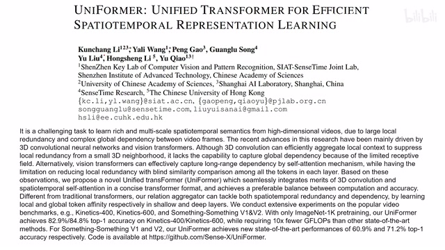
00:00:00–00:00:19 · 画面 001大家好,今天我们来快速数一篇论文 UniFormer: Unified Transformer for Efficient Spatial-Temporal Representation Learning。这篇论文重点就是探讨了我们该怎么样对一个 video 里面的各个像素各个 token 他们应该相互建立关系。我们应该怎么样建立这个关系？之前我们介绍过 TimeSformer，它的解决方案是在 Spatial 和 Temporal 分别做一次 attention。这里作者对 TimeSformer 做了一个 Visualization。
00:00:19–00:01:04 · 画面 002
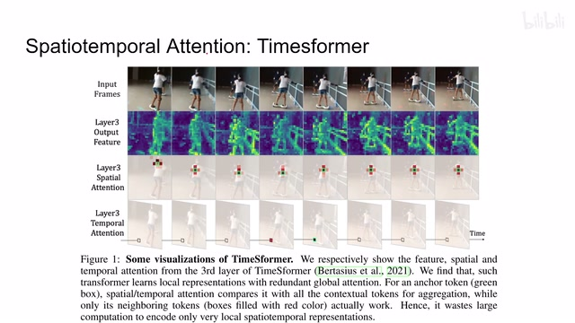
00:00:19–00:01:04 · 画面 002他发现假如说我们以绿色的 token 作为我们的计算 attention 的 query，他在做 spatial 的时候注意到的范围其实是非常小的。同时在做 temporal 的时候追踪这一串 token 似乎又没有什么意义。因为你比如说脚在这里，人在其他的时刻脚已经去到其他位置了，但是你还是在做同一个位置的 temporal 的 attention。作者认为这个是不太灵活的。
那么本文呢就探讨了如何应该进一步细化我们的 attention 这个几个 token 它们相互之间的设计。那本文这个结构呢其实它也是一个标准的 transformer 的结构。我们先不看上面这一个个 stage 啊，我们只看这个每个 stage 里面它的一个 transformer block。那最后面呢是这个 ffn 这个 mlp 嘛，这些东西呢没有变。那中间呢原本应该是这个 multi-head self-attention，这里呢作者把它替换为这个 multi-head relation aggregator。
00:01:04–00:01:08 · 画面 003
00:01:04–00:01:08 · 画面 00300:01:08–00:01:10 · 画面 004
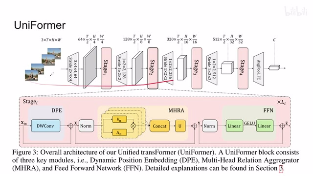
00:01:08–00:01:10 · 画面 00400:01:10–00:01:15 · 画面 005
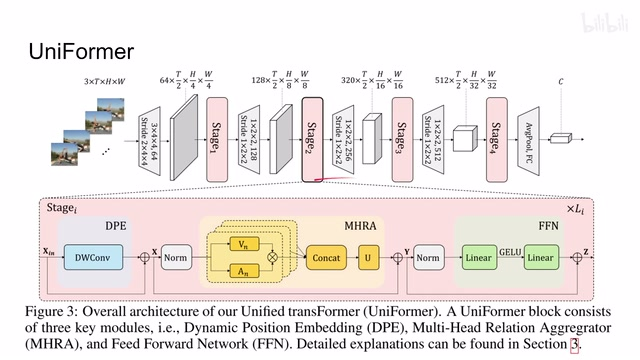
00:01:10–00:01:15 · 画面 00500:01:15–00:01:17 · 画面 006
00:01:15–00:01:17 · 画面 00600:01:17–00:01:28 · 画面 007
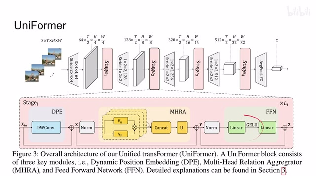
00:01:17–00:01:28 · 画面 007那么它是我们重点要讨论的一个东西。那么还有最开始的 positional embedding，这里作者提出了 dynamic positional embedding，本质上就是一个 depthwise 3D 的 convolution。那么下面我们就重点来看 mhra，那么 multi-head relation aggregator 主要的是为了解决在我们一开始这几层我们的 local redundancy 其实是很强的，就是你一个像素周围它很多的像素内容都是一样的。这个是在相对低层的情况下发生的事情。
00:01:28–00:01:30 · 画面 008
00:01:28–00:01:30 · 画面 00800:01:30–00:01:37 · 画面 009
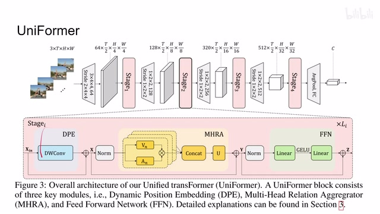
00:01:30–00:01:37 · 画面 00900:01:37–00:01:39 · 画面 010
00:01:37–00:01:39 · 画面 01000:01:39–00:01:41 · 画面 011
00:01:39–00:01:41 · 画面 01100:01:41–00:02:18 · 画面 012
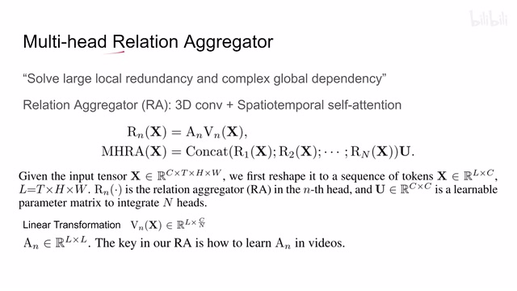
00:01:41–00:02:18 · 画面 012那么在相对高层呢我们需要建立一个复杂的全局的这么一个 dependency。那么因此针对不同的层呢，这个 relation aggregator 呢它应该有不同的设计。那么我们直接来看，首先一个通用的框架，你的一个 tensor 进来，它可能过这个 attention，它可能有 value。那么因为是 multi-head 嘛，所以是每个 head 单独处理。那最后呢把每个 head 串起来过一个这个 u。那么所以具体来说呢，我们就应该关注这个 rn 它是怎么实现的。
00:02:18–00:02:19 · 画面 013
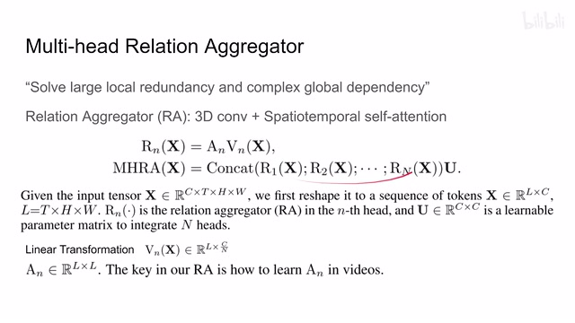
00:02:18–00:02:19 · 画面 01300:02:19–00:02:21 · 画面 014
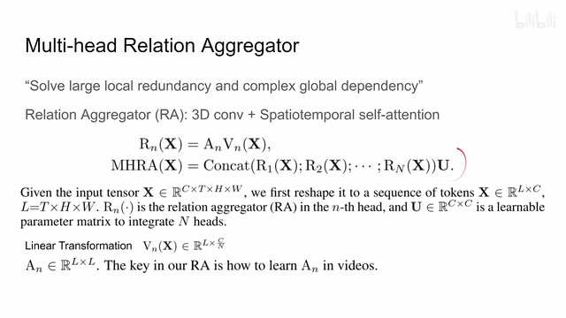
00:02:19–00:02:21 · 画面 01400:02:21–00:02:25 · 画面 015
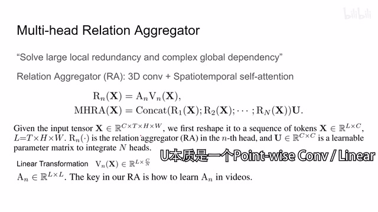
00:02:21–00:02:25 · 画面 01500:02:25–00:02:47 · 画面 016
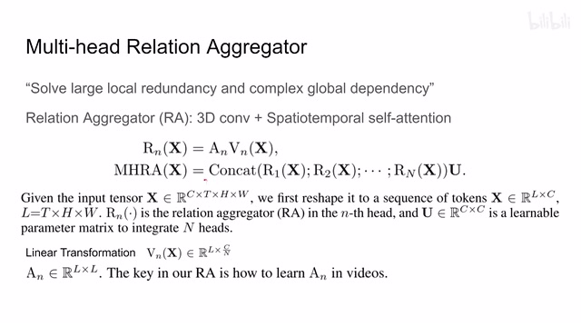
00:02:25–00:02:47 · 画面 016那这里呢作者针对我们的低层和高层做了两种设计。低层呢就是我们近似一个 3D convolution 这么一个结构。那么对于高层呢，我们在做这个 Spatial Temporal Self-Attention。那么当然对于这个 V 这个 Multi-Head 这个 V 就是一个 Linear Layer 给它做一个映射就可以了。那么下面呢我们继续来看这个 A 它的实现。
00:02:47–00:03:20 · 画面 017
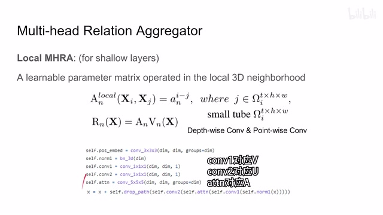
00:02:47–00:03:20 · 画面 017首先是 local 也就是相对浅的这些层，它本质上其实就是一个拆分过的 3D convolution。它的思想跟 mobile net 里面做 depthwise 和 pointwise convolution 拆分这个思想是非常像的。你看它这个表达式很复杂，那么实际上你就可以理解为我们在 tensor 当中取出了一个 tube，那么把我们这个 tube 送到一个大的抽象的卷积核里面，然后做出相应的卷积操作就可以了。
那我们具体来看这个代码啊，它的这个 block 的实现，首先是过这个 normalization，这是一个 tube 嘛，然后呢过一个 1x1x1 的这个 convolution。
00:03:20–00:03:21 · 画面 018
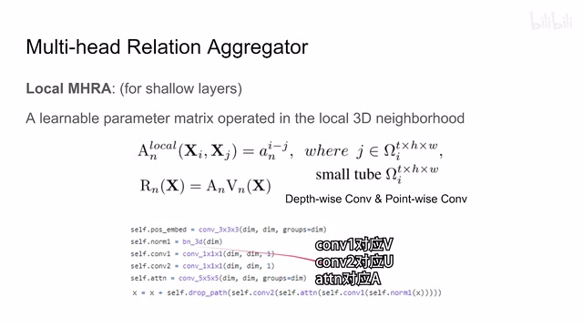
00:03:20–00:03:21 · 画面 01800:03:21–00:04:03 · 画面 019
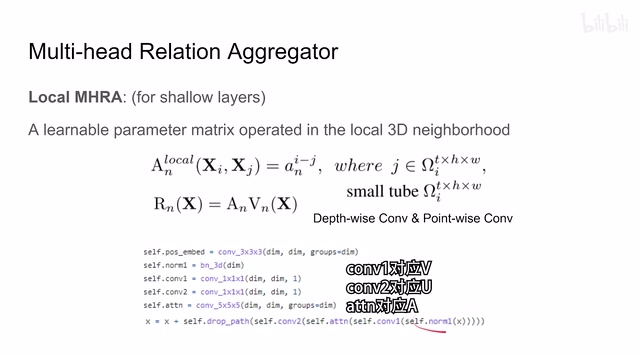
00:03:21–00:04:03 · 画面 019它呢就是一个 pointwise 的这个 convolution，相当于在空间尺度上大家不动，先把每个 channel 里面的信息混合一下，那么再往下呢是过了这个所谓的 attention。那其实这个 attention 呢就是一个 5x5x5，但是是这个 depthwise 的 convolution，也就是我们只在 spatial 做 convolution，然后每个 channel 之间它们是相互独立的，你可以看到它的这个 groups 呢就是这个 dimension 就是 channel 的数量。
那么过完这个之后呢，再做一个这个 pointwise convolution，这个 convolution2。那么它呢相当于把这个 channel 混合一遍，那最后呢还有这个 dropout，这个呢是作者的这个 local multi-head RA 的这个设计。那么再往下呢，我们看到这个 global，也就是在相对高的层里面我们做了这个 attention，那么到了这些层呢，它的目的就是为了全局的这个信息的它们的相互流通。那这里呢，作者就用了经典的 attention。
00:04:03–00:04:06 · 画面 020
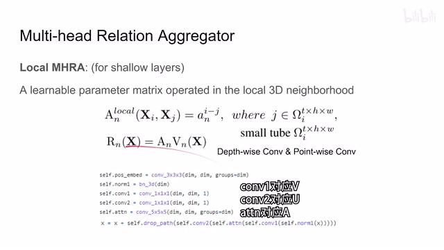
00:04:03–00:04:06 · 画面 02000:04:06–00:04:36 · 画面 021
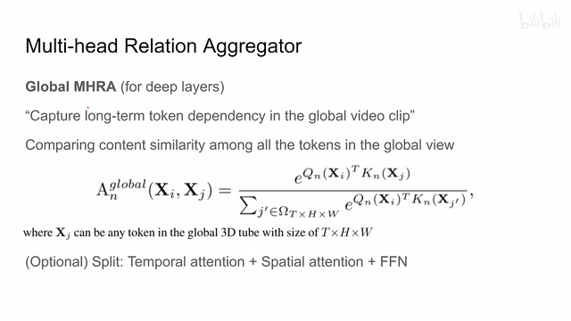
00:04:06–00:04:36 · 画面 021这里 query 和 key 对吧？为什么在这个指数上面，因为我们有一个 softmax，然后呢得到这个 attention 的矩阵，再跟我们的这个 value 相乘就是一个标准的 attention 的模块。那么当然呢，这里可选呢，你可以把我们的整个这个 block 再拆开。那这里呢是一个 spatial temporal 的 jointattention，你当然可以把它拆成先做 temporal 再做 spatial 这种，像 TimeSformer 的这种构型也是可以的。
00:04:36–00:04:38 · 画面 022
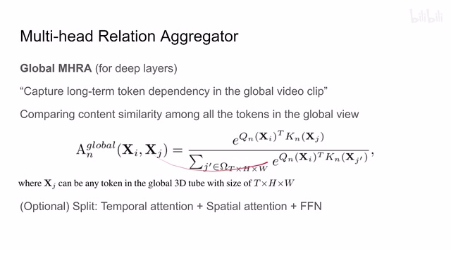
00:04:36–00:04:38 · 画面 02200:04:38–00:04:47 · 画面 023
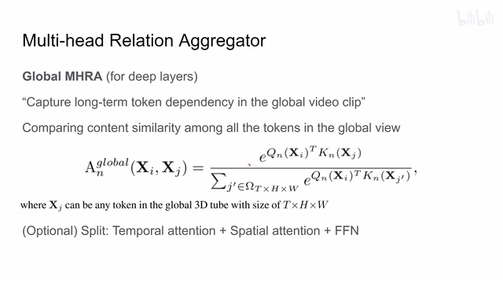
00:04:38–00:04:47 · 画面 023那么以上呢就是两种不同的这个 attention 在本文的结构里面。那么下面呢我们再来看这个 dynamic positional embedding，那为什么我们需要它？那么因为绝对位置编码呢，针对不同长度的视频呢需要插值，那么相对位置编码呢性能不好。这里呢作者借鉴了这篇的文章，直接怼了一个 3D 的 depthwise convolution。那对于每个 block 来说呢都有这个 positional embedding，那这个呢就是作者的这个所谓的 DPE。
00:04:47–00:04:48 · 画面 024
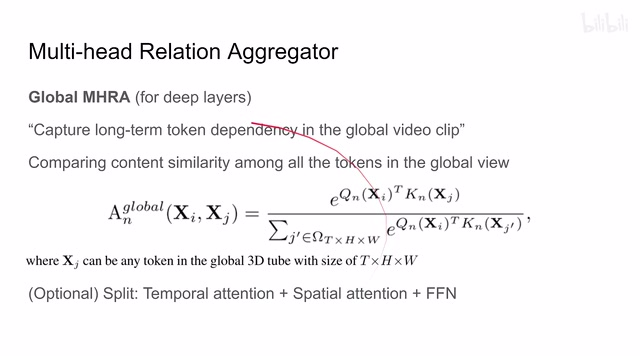
00:04:47–00:04:48 · 画面 02400:04:48–00:04:52 · 画面 025
00:04:48–00:04:52 · 画面 02500:04:52–00:05:13 · 画面 026
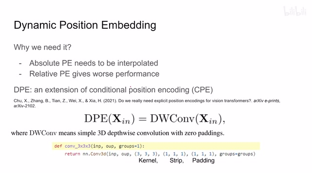
00:04:52–00:05:13 · 画面 02600:05:13–00:05:14 · 画面 027
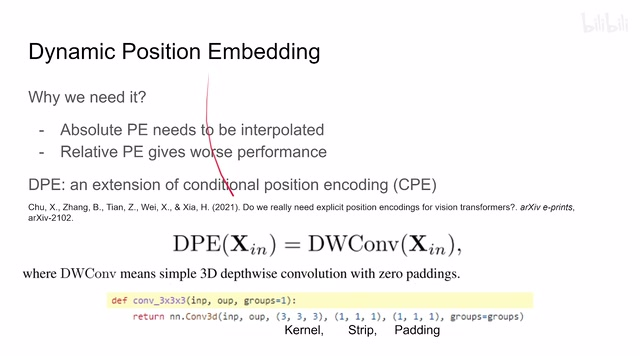
00:05:13–00:05:14 · 画面 02700:05:14–00:05:18 · 画面 028
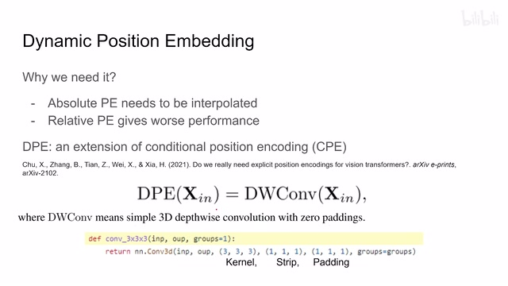
00:05:14–00:05:18 · 画面 028那么下面呢我们就可以把以上的这些模块整合起来，来看到作者的这个网络的结构。那每次升阶段的时候呢，你都会把这个 token 的这个 spatial resolution 减少，它的这个 depth resolution 增加。那么每个 block 里面先是这个 positional embedding，然后呢这个 attention 或者是这个 convolution，最后呢是这个 ffn。那么最后呢你把这个所有的这个 tokenpooling 起来就可以了。
00:05:18–00:05:44 · 画面 029
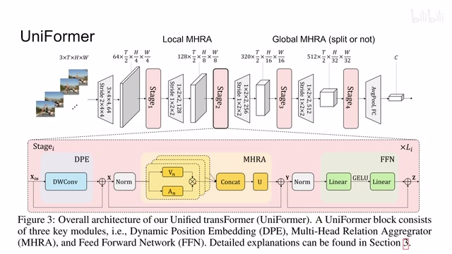
00:05:18–00:05:44 · 画面 029那么下面我们来看作者汇报的结果，首先是一个快速的对比，从 X3D 到 TimeSformer，我们这种不同的信息交互的方法来建立，然后计算量的减小同时准确性的增加。这里是两个 Something Something 的性能，那么后面还有作者的 Ablation，比如说我们的 Positional Embedding 怎么做，然后一共四个阶段，每个阶段应该用什么样的 Block 是用 Local 还是 Global。
00:05:44–00:06:00 · 画面 030
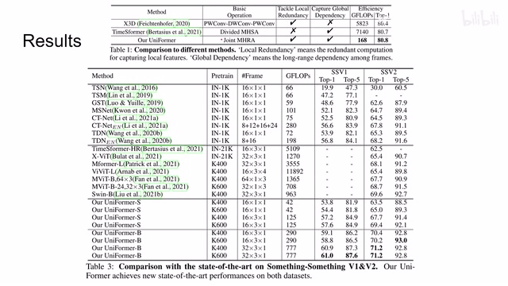
00:05:44–00:06:00 · 画面 03000:06:00–00:06:27 · 画面 031
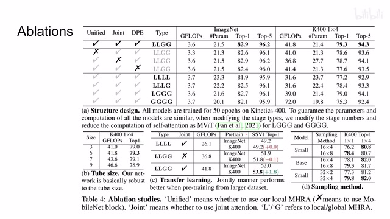
00:06:00–00:06:27 · 画面 031这里都有做，感兴趣的朋友呢可以看一下。总的来说呢，这篇文章呢并不是一篇意外的文章，里面的设计逻辑呢都符合我们之前的一些观察，符合一些直觉。那么以上呢就是我对这个文章的一个快速的整理，那么感谢您的收看，再见。
00:06:27–00:06:27 · 画面 032
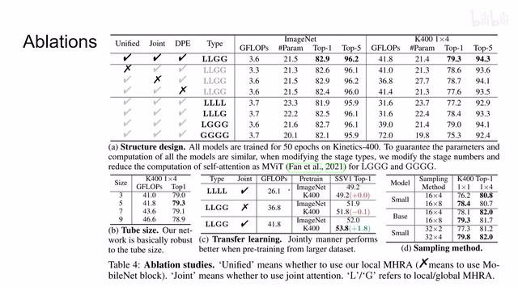
00:06:27–00:06:27 · 画面 032转写与来源说明 · 0 个自动复核提示
保留 15 个原始语音片段，0 个片段触发自动复核提示。提示仅用于定位可能的术语、重复或识别问题，不等于已确认错误。
讲解画面为源视频截图（640×360），不是可编辑 PPT 文件。全片按每秒 2 帧扫描内容变化，逐步展开页保留；连续动画保留代表画面。清晰度受源视频限制。
原视频：paper/合集_2026-10-16_新模型/[论文简析]Unified Transformer for Efficient Spatiotemporal...[2201.04676].mp4
SHA-256：874260ce4fa8566d6eb216c56674355a8517a509f1de0658d54cc28816b009a5
全文按视频语音与画面制作。原论文可从上方链接下载；完整资料包保留全文、原始逐字稿、字幕和校对记录。